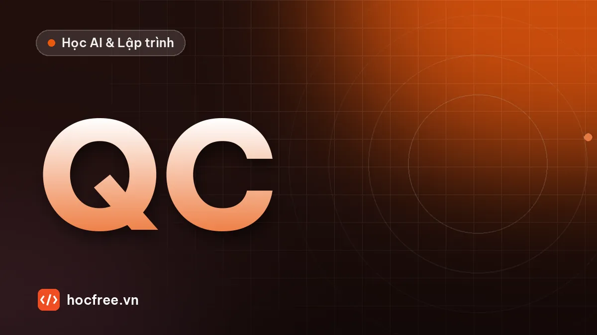

Dự án chặng 1: báo cáo chất lượng thư mục ảnh bằng Python
Công cụ quét hàng nghìn ảnh, phát hiện ảnh hỏng, tối, sáng, mờ, xuất CSV và log. Có yêu cầu, gợi ý thiết kế, lời giải và tiêu chí tự đánh giá.

Học xong bài này, bạn sẽ
- Kết hợp pathlib, NumPy, CSV, logging trong một chương trình
- Phát hiện ảnh hỏng, quá tối, quá sáng
- Viết code chia hàm rõ ràng, chạy lại được
Nên học trước: Ảnh là mảng số: NumPy cho xử lý ảnh
Nội dung bài viết
Đây là dự án cuối chặng 1. Bạn sẽ viết một công cụ thật mà kỹ sư Vision dùng hằng tuần: quét một thư mục ảnh (có thể hàng nghìn ảnh, nhiều thư mục con), phát hiện ảnh hỏng, quá tối, quá sáng, mờ, rồi xuất báo cáo CSV và file log. Dự án dùng lại toàn bộ kiến thức chặng 1: hàm, module, pathlib, xử lý lỗi, cấu hình JSON, NumPy và CSV.
1. Bài toán
Trước khi huấn luyện mô hình AI hay chỉnh thuật toán, bạn nhận được một thư mục ảnh thu từ dây chuyền. Một phần ảnh có vấn đề: file hỏng do mất mạng khi lưu, ảnh tối do đèn chưa bật, ảnh cháy sáng, ảnh mờ do camera rung. Dùng ảnh xấu để huấn luyện hay chỉnh ngưỡng sẽ cho kết quả sai. Công cụ của bạn phải tìm ra chúng tự động.
2. Yêu cầu
| # | Yêu cầu |
|---|---|
| 1 | Nhận đường dẫn thư mục ảnh, duyệt cả thư mục con, chấp nhận .png .jpg .jpeg .bmp (không phân biệt hoa thường). |
| 2 | Với mỗi ảnh: kích thước, độ sáng trung bình, độ tương phản (độ lệch chuẩn), độ nét (phương sai Laplacian). |
| 3 | Phân loại: hong (không đọc được), toi, sang, mo, tot. Ngưỡng đọc từ file cau_hinh.json. |
| 4 | Ghi bao_cao.csv (mở được bằng Excel, tiếng Việt không lỗi font) và bao_cao.log. |
| 5 | In tóm tắt: tổng số ảnh, số lượng từng loại, thời gian xử lý. |
| 6 | Một ảnh hỏng không được làm dừng chương trình. |
3. Chuẩn bị
pip install numpy opencv-pythonBài này dùng 3 hàm của OpenCV (chặng 2 sẽ học kỹ): cv2.imread đọc ảnh, cv2.cvtColor chuyển sang ảnh xám và cv2.Laplacian đo độ nét. Ảnh càng nét thì cạnh càng sắc, ảnh Laplacian càng nhiều giá trị lớn và phương sai của nó càng cao. Ảnh mờ cho phương sai thấp.
Chưa có thư mục ảnh thật? Đoạn code sau tạo dữ liệu thử gồm ảnh tốt, tối, sáng, mờ và một file hỏng:
from pathlib import Path
import cv2
import numpy as np
thu_muc = Path("du_lieu_thu")
(thu_muc / "ca_1").mkdir(parents=True, exist_ok=True)
(thu_muc / "ca_2").mkdir(parents=True, exist_ok=True)
rng = np.random.default_rng(0)
def anh_mau(do_sang=120):
anh = np.full((240, 320, 3), do_sang, np.uint8)
for _ in range(8):
x, y = rng.integers(30, 290), rng.integers(30, 210)
cv2.circle(anh, (int(x), int(y)), int(rng.integers(8, 25)), (230, 230, 230), -1)
return anh
for i in range(6):
cv2.imwrite(str(thu_muc / "ca_1" / f"tot_{i}.png"), anh_mau())
cv2.imwrite(str(thu_muc / "ca_1" / "toi.png"), anh_mau(5) // 8)
cv2.imwrite(str(thu_muc / "ca_2" / "sang.JPG"), np.full((240, 320, 3), 250, np.uint8))
cv2.imwrite(str(thu_muc / "ca_2" / "mo.png"), cv2.GaussianBlur(anh_mau(), (31, 31), 0))
(thu_muc / "ca_2" / "hong.png").write_bytes(b"file bi loi khi luu")
print(sorted(p.name for p in thu_muc.rglob("*")))4. Gợi ý thiết kế
Chia chương trình thành các hàm nhỏ, mỗi hàm một việc:
doc_cau_hinh(duong_dan) → dict ngưỡng (có mặc định)
tim_anh(thu_muc) → list Path các ảnh
phan_tich_anh(duong_dan) → dict chỉ số của một ảnh, hoặc None nếu hỏng
phan_loai(chi_so, cau_hinh) → "tot" / "toi" / "sang" / "mo"
ghi_csv(ket_qua, duong_dan) → ghi file báo cáo
main() → nối mọi thứ lại, in tóm tắtThứ tự phân loại nên là: hỏng → tối → sáng → mờ → tốt. Ảnh tối hầu như không có cạnh nên luôn "mờ"; kiểm tra tối/sáng trước giúp báo đúng nguyên nhân gốc.
5. Lời giải mẫu
Xem lời giải đầy đủ (bao_cao_anh.py)
"""Báo cáo chất lượng thư mục ảnh: phát hiện ảnh hỏng, tối, sáng, mờ.
Chạy: python bao_cao_anh.py du_lieu_thu
"""
import csv
import json
import logging
import sys
import time
from collections import Counter
from pathlib import Path
import cv2
import numpy as np
DUOI_ANH = {".png", ".jpg", ".jpeg", ".bmp"}
MAC_DINH = {"toi": 40, "sang": 220, "do_net_min": 100.0}
log = logging.getLogger("bao_cao_anh")
def doc_cau_hinh(duong_dan: Path) -> dict:
cau_hinh = dict(MAC_DINH)
if duong_dan.exists():
cau_hinh.update(json.loads(duong_dan.read_text(encoding="utf-8")))
else:
duong_dan.write_text(json.dumps(MAC_DINH, indent=2), encoding="utf-8")
log.info("Tạo file cấu hình mặc định %s", duong_dan)
if not 0 <= cau_hinh["toi"] < cau_hinh["sang"] <= 255:
raise ValueError("Cấu hình sai: cần 0 <= toi < sang <= 255")
return cau_hinh
def tim_anh(thu_muc: Path) -> list[Path]:
return sorted(p for p in thu_muc.rglob("*") if p.is_file() and p.suffix.lower() in DUOI_ANH)
def phan_tich_anh(duong_dan: Path) -> dict | None:
# imdecode + fromfile đọc được cả đường dẫn có dấu tiếng Việt trên Windows
du_lieu = np.fromfile(str(duong_dan), dtype=np.uint8)
anh = cv2.imdecode(du_lieu, cv2.IMREAD_COLOR) if du_lieu.size else None
if anh is None:
return None
xam = cv2.cvtColor(anh, cv2.COLOR_BGR2GRAY)
return {
"rong": anh.shape[1],
"cao": anh.shape[0],
"do_sang": round(float(xam.mean()), 1),
"tuong_phan": round(float(xam.std()), 1),
"do_net": round(float(cv2.Laplacian(xam, cv2.CV_64F).var()), 1),
}
def phan_loai(chi_so: dict, cau_hinh: dict) -> str:
if chi_so["do_sang"] < cau_hinh["toi"]:
return "toi"
if chi_so["do_sang"] > cau_hinh["sang"]:
return "sang"
if chi_so["do_net"] < cau_hinh["do_net_min"]:
return "mo"
return "tot"
def ghi_csv(ket_qua: list[dict], duong_dan: Path) -> None:
cot = ["duong_dan", "loai", "rong", "cao", "do_sang", "tuong_phan", "do_net"]
# utf-8-sig: thêm BOM để Excel nhận đúng tiếng Việt
with open(duong_dan, "w", newline="", encoding="utf-8-sig") as f:
w = csv.DictWriter(f, fieldnames=cot)
w.writeheader()
w.writerows(ket_qua)
def main(thu_muc: str) -> dict:
logging.basicConfig(
level=logging.INFO,
format="%(asctime)s %(levelname)s %(message)s",
handlers=[logging.FileHandler("bao_cao.log", encoding="utf-8"), logging.StreamHandler()],
force=True,
)
goc = Path(thu_muc)
if not goc.is_dir():
raise SystemExit(f"Không tìm thấy thư mục: {goc}")
cau_hinh = doc_cau_hinh(Path("cau_hinh.json"))
t0 = time.perf_counter()
ket_qua = []
for p in tim_anh(goc):
try:
chi_so = phan_tich_anh(p)
except Exception: # lỗi lạ: ghi đầy đủ rồi đi tiếp
log.exception("Lỗi khi xử lý %s", p)
chi_so = None
if chi_so is None:
ket_qua.append({"duong_dan": str(p.relative_to(goc)), "loai": "hong"})
log.warning("Ảnh hỏng: %s", p)
continue
loai = phan_loai(chi_so, cau_hinh)
ket_qua.append({"duong_dan": str(p.relative_to(goc)), "loai": loai, **chi_so})
if loai != "tot":
log.info("%s: %s (sáng %.1f, nét %.1f)", p.name, loai, chi_so["do_sang"], chi_so["do_net"])
ghi_csv(ket_qua, Path("bao_cao.csv"))
dem = Counter(r["loai"] for r in ket_qua)
log.info("Tổng %d ảnh trong %.2f s: %s", len(ket_qua), time.perf_counter() - t0, dict(dem))
return dem
if __name__ == "__main__":
main(sys.argv[1] if len(sys.argv) > 1 else "du_lieu_thu")2026-10-09 08:57:25,857 INFO Tạo file cấu hình mặc định cau_hinh.json
2026-10-09 08:57:25,862 INFO toi.png: toi (sáng 2.9, nét 33.4)
2026-10-09 08:57:25,880 WARNING Ảnh hỏng: du_lieu_thu/ca_2/hong.png
2026-10-09 08:57:25,883 INFO mo.png: mo (sáng 127.9, nét 0.4)
2026-10-09 08:57:25,886 INFO sang.JPG: sang (sáng 250.0, nét 0.0)
2026-10-09 08:57:25,886 INFO Tổng 10 ảnh trong 0.03 s: {'toi': 1, 'tot': 6, 'hong': 1, 'mo': 1, 'sang': 1}File bao_cao.csv (rút gọn):
duong_dan,loai,rong,cao,do_sang,tuong_phan,do_net
ca_1/toi.png,toi,320,240,2.9,8.5,33.4
ca_1/tot_0.png,tot,320,240,127.1,27.0,357.3
ca_2/hong.png,hong,,,,,
ca_2/mo.png,mo,320,240,127.9,23.8,0.4
ca_2/sang.JPG,sang,320,240,250.0,0.0,0.0Để ý ảnh tối vẫn có độ nét 33,4, thấp hơn nhiều so với ảnh tốt (350–580) nhưng không bằng 0. Đó là lý do phải kiểm tra tối/sáng trước khi kết luận ảnh mờ. Ngưỡng do_net_min phụ thuộc nội dung ảnh, nên hãy chạy công cụ trên vài chục ảnh tốt của dây chuyền thật rồi đặt ngưỡng khoảng một nửa giá trị nhỏ nhất của ảnh tốt.
Giải thích các điểm đáng học
np.fromfile+cv2.imdecodethay chocv2.imread: đọc được đường dẫn có dấu tiếng Việt trên Windows, và trảNonevới file hỏng thay vì gây lỗi.loggingghi cùng lúc ra màn hình và filebao_cao.log, có thời gian và mức độ (INFO, WARNING).log.exceptionghi cả traceback, rất quý khi tìm lỗi lạ sau một đêm chạy.utf-8-sigkhi ghi CSV: Excel trên Windows cần ký tự BOM ở đầu file để hiển thị đúng tiếng Việt.**chi_sogộp dict chỉ số vào bản ghi kết quả; ảnh hỏng thiếu các cột này thìDictWriterđể trống.relative_to(goc)ghi đường dẫn tương đối, báo cáo gọn và chuyển sang máy khác vẫn có nghĩa.
6. Tự đánh giá
| Tiêu chí | Đạt khi |
|---|---|
| Chạy đúng | Phân loại đúng cả 10 ảnh trong dữ liệu thử, kể cả file .JPG viết hoa |
| Bền vững | Thêm 3 file hỏng bất kỳ vào thư mục, chương trình vẫn chạy hết |
| Cấu hình | Đổi ngưỡng trong cau_hinh.json mà không sửa code, kết quả thay đổi tương ứng |
| Báo cáo | Mở bao_cao.csv bằng Excel thấy đúng tiếng Việt, đủ cột |
| Code sạch | Mỗi hàm một việc, có docstring hoặc tên tự giải thích, không có biến toàn cục bị sửa trong hàm |
7. Mở rộng (nếu còn thời gian)
- Phát hiện ảnh trùng: tính
hashlib.md5(du_lieu).hexdigest()cho từng file, báo các nhóm ảnh giống hệt nhau. - Thêm tham số dòng lệnh
--di-chuyen: chuyển ảnh xấu sang thư mụcloai_bo/<loai>/(dùngargparse). - Báo cáo thêm kích thước ảnh phổ biến nhất và cảnh báo ảnh có kích thước khác thường (thường là ảnh từ camera khác lẫn vào).
Hoàn thành dự án này, bạn đã có đủ nền tảng Python để sang chặng 2: OpenCV. Hãy đánh dấu đã học xong và lưu dự án lên GitHub: đây là sản phẩm đầu tiên trong portfolio của bạn.